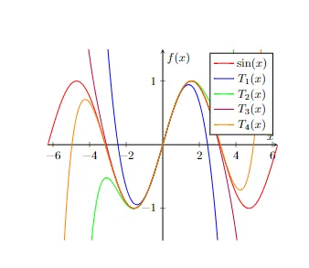

← ← ← 5/21/2024, 11:50:19 AM | Posted by: Lorenzo Battistela
5 min read
In mathematics, the Taylor series or Taylor expansion of a function is an infinite sum of terms that are expressed in terms of the function’s derivatives at a single point. [Source]
When I first read the definition above, I felt like I was reading greek (I don’t know greek, to be clear). The concept of an infinite sum of terms itself can be confusing, and what does it mean for this sum to be expressed in therm of the derivative of the function at a point? And for what this thing called Taylor Series is used? Let’s find out now!
Again, our goal here is to be conceptual, but the present article will make much more sense if you are already familiar with some calculus fundamentals. I highly recommend you reading my previous article on calculus here.
In math, series is a short name for infinite summation. Imagine that you want to add up all natural numbers. You would start by adding up 0 + 1 + 2 + 3 + 4 + 5… But when does this sum end? The answer is never. Natural numbers are infinite, sou you would continue to sum up numbers infinitely and never reach the end.
This problem was considered by an ancient Greek called Zeno of Elea. He thought that it was impossible to reach a finite result when summing an infinite series (here the word infinite is just for emphasize the fact that it is infinite), and created a paradox, named The Achilles. Imagine we have a man named Achilles, the fastest runner of antiquity, racing against a tortoise that is crawling away from him. They are running a linear path at constant speeds. To reach the tortoise, our runner needs to reach the place where the tortoise currently is. But when he reaches it, the tortoise crawled to another position, and so on forever. Zeno is assuming that space and time are infinitely divisible (continuous), not discrete or atomistic.
The mathematic point here is that divide our race into infinitely many sub-races that require a finite amount of time to catch the tortoise, thus it has a finite sum. If you are curious about the philosophy part here, I recommend this read.
It is the same principle of the following problem:
What happens when we sum 1/2 + 1/4 + 1/8 + 1/16 + … ? The answer is that the result is 1. We can visualize that thinking about a square of side 1. Then fill it in with the fractions above. You will see that the value converges to one, which means it fills the entire square.
Now that we understood the “Series” part of the name, it is worth mentioning that the “Taylor” part comes from Brook Taylor, who published the general method for constructing this type of series in 1715.
A basic explanation for Taylor Series is that we can approximate a function by a polinomial that closely matches the function’s behavior around a given point. Generally, given a function f(x), and a point a, the Taylor Series for f(x) centered at a is given by:
where f(a’) is the derivative of a , f(a’’) is the second derivative of a (the second derivative would be the derivative of the derivative of f(a), and so on), and the 2! means factorial of 2 (Ex: factorial of 3 is 3 * 2 * 1).
Let’s put this on a real function, let’s say f(x) = sin(x) . We will also take our first four Taylor polynomials:

Built by me here: https://www.overleaf.com/read/byzqfhwmcvvt
In the graph above, our center is 0. You can see that all the functions are centered at x = 0. Take a look at the blue line. Near x = 0, our function T1 is a straight line that approximates the behavior of the original function f(x) = sin(x). The second-order polynomial is a quadratic function (green line), and it captures more of the curvature of our original function. As our N increases (the number of polynomials we take), the Taylor Polynomials get closer and closer to the original function. In fact, the Taylor Series (which is the infinite sum of all taylor polynomials) converges to the original function within a certain radius of convergence.
But overall, when are Taylor functions used? There are many applications for them, such as
Made this article a little shorter, since I won’t cover some more advanced content (I intent to do this in the future, need to study a little bit more). Taylor series are really impressive if you’re used to high school math. The concept of infinite series is really interesting, and it causes discussions on the field of Physics, Mathematics and Philosophy. Taylor series are a powerful math tool, and it is worth learning it. I’ll leave many reference websites and sources that are worth reading. Thank’s for coming over today! See you next week.